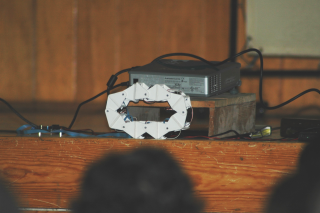
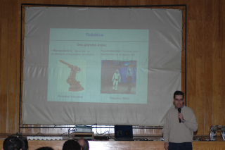
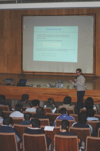
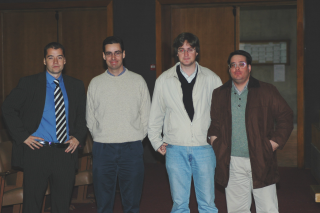
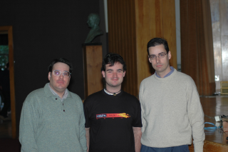

|
 |
|
|
“Diseño de Robots Ápodos: Cube Revolutions”.UPSAM. Nov-2004 |
|
 |
|
Título: “Diseño de Robots Ápodos: Cube Revolutions”
Evento: IV Semana de la Ciencia en Madrid. Ciclo de conferencias sobre Robótica en la UPSAM.
Lugar: Universidad Pontificia de Salamanca en Madrid (UPSAM)
Fecha: 24 de Noviembre de 2004
Ponente: Juan González Gómez (Universidad Autónoma de Madrid, UAM)
En el campo de la robótica móvil existen robots que no utilizan ni ruedas ni orugas ni patas para desplazarse. Dentro de este grupo se encuentran los robots ápodos. Por otro lado, en 1994 Mark Yim propuso un nuevo enfoque en la construcción de robots móviles: la robótica modular reconfigurable. El robot Cube Revolutions, descrito en esta presentación, es un ápodo desarrollado bajo la perspectiva de la robótica modular reconfigurable. Está compuesto por la unión en cadena de 8 módulos iguales (Módulos Y1). Se desplaza en línea recta, mediante ondas que recorren su cuerpo desde la cola hasta la cabeza. El robot calcula las posiciones de las articulaciones a partir de los parámetros de la onda: forma, amplitud y longitud de onda. Para la electrónica se han usado diferentes enfoques. En esta presentación se muestra la más sencilla: control mediante un microcontrolador de 8 bits conectado a un PC por medio de un cable serie. Cube Revolutions es un robot para la investigación, que está en desarrollo. Se muestran los algoritmos empleados para la locomoción y los que se van a emplear en un futuro: algoritmos genéticos que permitan determinar las secuencias óptimas de movimiento.
|
Descarga de la presentación |
|
uca-cube-rev.sxi (5,0MB) |
Presentación para OpenOffice 1.1.2 |
|
uca-cube-rev.pdf (1,5MB) |
Presentación en PDF |
Se condecen permisos para usar, modificar y/o distribuir esta presentación, siempre que se mantenga esta nota.
Robot Cube Revolutions
Información sobre los módulos Y1
Artículo presentado en el Clawar 2004, sobre Cube Revolutions: “Locomotion of a Modular Worm-like Robot using a FPGA-based embeded MicroBlaze Soft-processor”
Artículo presentado en el JCRA 2004, sobre Cube Revolutions: “Locomoción de un Robot Ápodo Modular con el Procesador MicroBlaze”
Cube Reloaded, versión anterior de Cube Revolutions.
“Diseño de Robots ápodos”, trabajo de iniciación a la investigación. Junio 2003.
Cube 2.0, versión inicial, anterior a Cube Reloaded
La conferencia tuvo lugar el Lunes 24 de Noviembre, en el salón de actos de la Universidad Pontificia de Salamanca en Madrid (UPSAM). Fue la tercera y última de un ciclo de tres charlas sobre robótica.
|
 Juan González al comienzo de la conferencia. |
 Al finalizar la conferencia, se hicieron demos de todos los robots vistos durante el ciclo de Robóitca |
|
 De izquierda a Derecha: David Olmo, Juan González, Andrés Prieto-Moreno y Ricardo Gómez |
 Ricardo y Juan junto a Víctor, el presidente del grupo LINUPS |
A Ifara tecnologías, por contar conmigo para el ciclo de charlas sobre robótica en la UPSAM.
A Andrés Prieto-Moreno por gestionarlo todo. Yo sólo he tenido que ir y hablar :-)
1/Enero/2005: Añadido enlace a Cube Revolutions
29/Nov/2004: Publicada información en esta web